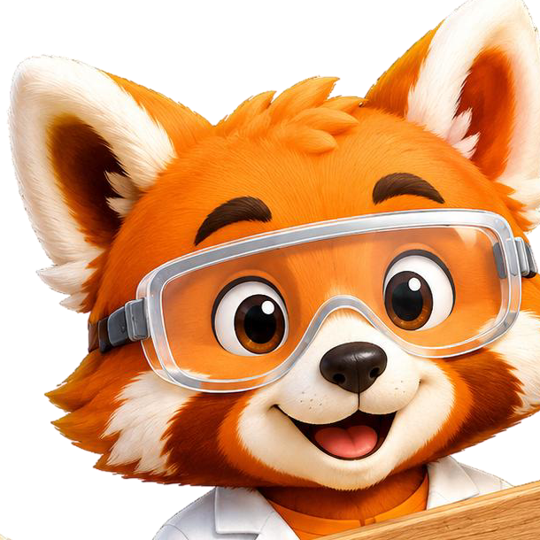
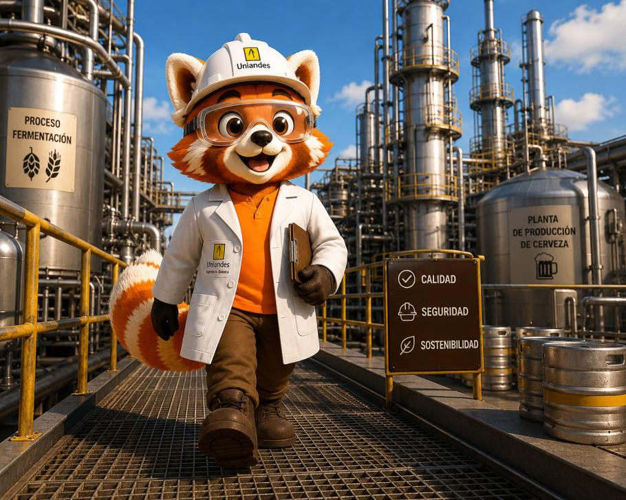
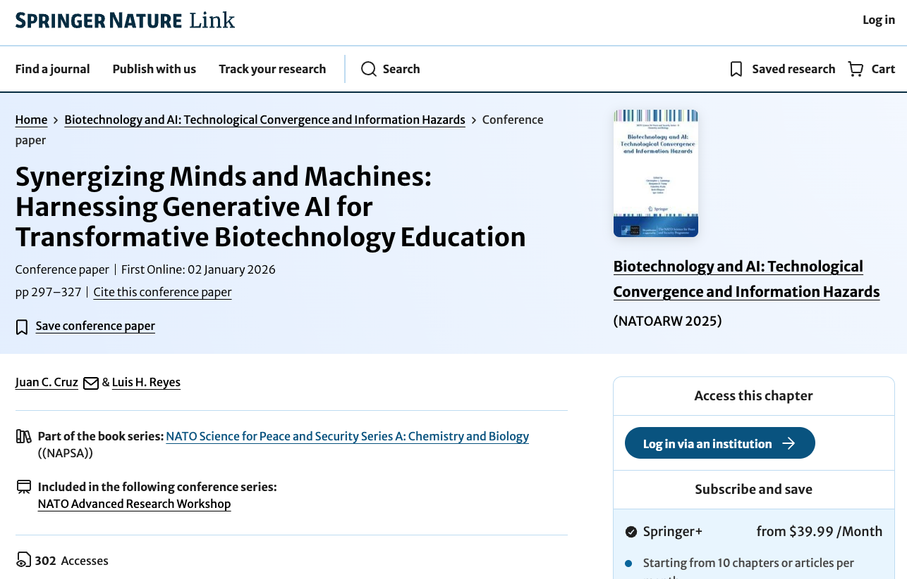
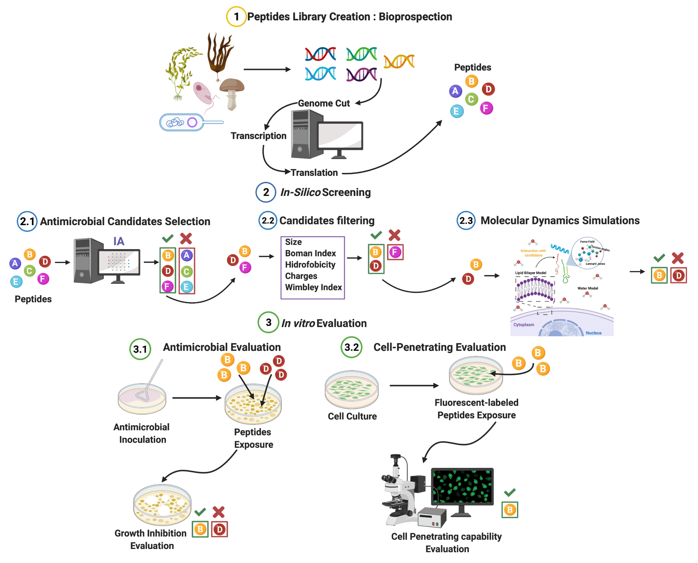
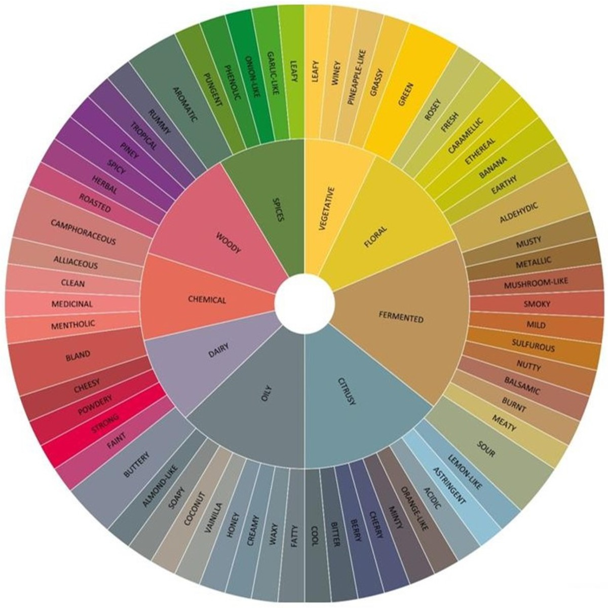
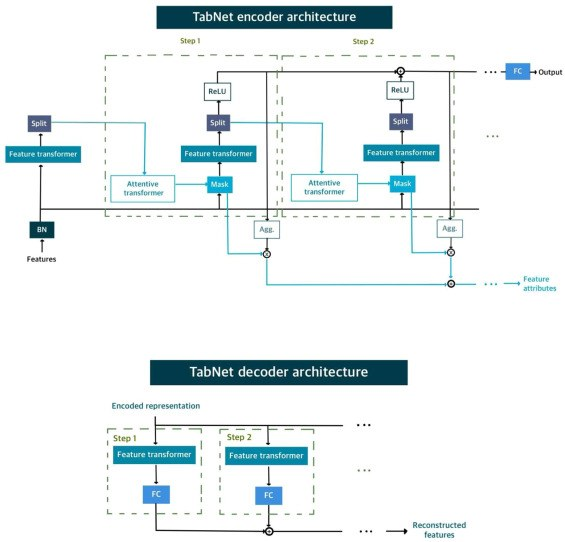
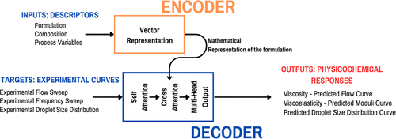
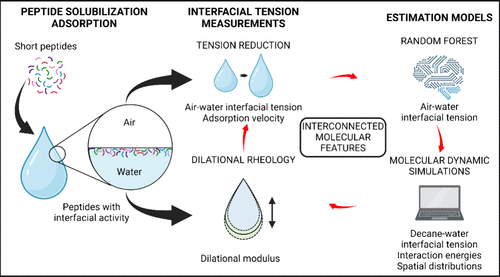
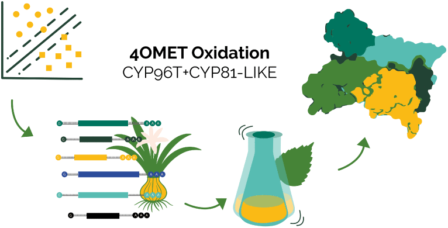

Diseñas, fabricas y le pones marca a tu producto. El laboratorio es el corazón de la sesión.
Qué es diseñar un producto y quién es tu cliente.
Conversas con Flux y obtienes tu ficha técnica.
Pesas, mezclas y moldeas tu BathBoom.
Creas nombre, eslogan y etiqueta con IA.
Muestran sus productos y reflexionan.

Flux los acompaña en cada momento: pregunta, propone y organiza. Ustedes deciden.La ingeniería química está en casi todo lo que usas cada día.
Cremas, jabones y bombas de baño que cuidan la piel.
Procesos más seguros, nutritivos y sostenibles.
Fórmulas que sanan y salvan vidas.
Combustibles, baterías y fuentes más limpias.
Plásticos, textiles y materiales más inteligentes.
Tratamiento de agua y cuidado de los recursos.
La Ingeniería Química se conecta con lo que a ti te gusta: tú moldeas la carrera con el énfasis que elijas.
Laboratorio y pruebas reales.
Simulación, modelación e IA.
Tratamientos ambientales y sostenibilidad.
Cosmética, alimentos y materiales.
Innovación y creación de empresa.
Aprender haciendo, diseñar con propósito y conectar la ciencia con problemas reales.
En productos útiles, sostenibles y funcionales.
Biotecnología, IA, cosmética, energía y alimentos.
Laboratorios, salones, comunidades y empresas.
Innovación, sostenibilidad y soluciones para la vida diaria.

Laboratorios + diseño + prototipadoNo solo enseñamos ingeniería química: investigamos cómo enseñarla mejor con inteligencia artificial. Haz clic en cada iniciativa.
Construimos simulaciones interactivas para el aula: en vez de solo leer cómo se fractura y muele un mineral, los estudiantes exploran el modelo, cambian parámetros y ven el resultado al instante.
luchoplaza.github.io/DEM_SAGOpenAI invitó al profesor Luis H. Reyes a su plataforma para docentes a contar cómo usa IA generativa en sus cursos de Operaciones Unitarias en la Universidad de los Andes.
Ver en OpenAI Academy ↗
Por invitación de la OTAN escribimos un capítulo sobre cómo integrar IA generativa en la formación en biotecnología, con el marco CASF que alinea la IA con las etapas de aprendizaje del estudiante.
Cruz & Reyes (2026) · NATO Science for Peace and Security Series · Springer · doi.org/10.1007/978-3-032-05246-9_12El profesor Reyes lidera el comité de investigación de AIGEN, una iniciativa internacional (Tecnológico de Monterrey) sobre el uso responsable de la IA generativa en la educación.
Conocer AIGEN ↗Los mismos profesores que te acompañarían usan IA para resolver problemas reales. Haz clic en cada proyecto.
Un modelo de IA (un transformer de audio) predice qué sabores evoca una canción instrumental y arma listas de reproducción por sabor. Investigación dirigida por el profesor Reyes, con el área de mercadeo y el grupo SinfonIA de la Universidad.
sonicseasoning.vercel.app
Encontrar nuevos antibióticos es lento y costoso. Nuestra IA predice qué péptidos pueden destruir bacterias, reduciendo miles de experimentos a unos pocos candidatos. Superó al mejor método anterior en 8.8 %.
Ruiz Puentes, …, Reyes, Cruz, Arbeláez · Membranes 2022 · doi.org/10.3390/membranes12070708
IA que agrupa más de 3 000 compuestos químicos y sus aromas para construir la «rueda de sabores» de licores destilados: una herramienta para entender qué le da su carácter a cada bebida.
Rodríguez-Mendoza et al. (Ratkovich) · Foods 2024 · doi.org/10.3390/foods13244142
IA que predice el aroma de una molécula solo a partir de su estructura química, acelerando el diseño de sabores y fragancias sin depender únicamente de catadores.
Flores et al. (Ratkovich) · Applied Food Research 2026 · doi.org/10.1016/j.afres.2026.101962
Un transformer que predice el comportamiento físico de una emulsión cosmética —viscosidad, textura, tamaño de gota— a partir de su fórmula, con correlaciones superiores a 0.90.
Solarte, Porras, Pradilla, Álvarez · ACS Omega 2026 · doi.org/10.1021/acsomega.6c02941
IA que identifica péptidos capaces de sustituir surfactantes derivados del petróleo en cosméticos y agricultura, prediciendo su comportamiento en la interfaz agua–aceite.
Ricardo, Reyes, Cruz, Wiedman, Álvarez, Pradilla · J. Phys. Chem. B 2024 · doi.org/10.1021/acs.jpcb.4c04036
IA que descubre enzimas involucradas en la síntesis de alcaloides medicinales en la planta Crinum asiaticum, evitando meses de ensayos en el laboratorio.
Valderruten-Cajiao et al. (González Barrios) · ACS Synthetic Biology 2026 · doi.org/10.1021/acssynbio.5c00779Los tres vértices están conectados: si cambias uno, cambian los otros dos.
Bicarbonato de sodio, ácido cítrico, almidón, aceite, color y aroma. Lo que decides que sea.
Color, aroma, dureza y efervescencia. Por dentro, moléculas que reaccionan.
Mezclar, compactar y secar. Y la reacción que se libera al tocar el agua.
Cada equipo recibe el perfil de un cliente y crea la bomba ideal para él.
Al tocar el agua se deshace poco a poco y libera color, aroma y una sensación suave.
El agua activa el bicarbonato de sodio y el ácido cítrico: reaccionan y liberan burbujas de CO₂.
Color, aroma, textura, forma y resistencia. Cada decisión cambia la experiencia final.
Sugiere ideas, ordena información y las escribe rápido.
Eliges, evalúas y respondes por el producto final.
Te ahorra tiempo para pensar mejor, no menos.
Nada entra al laboratorio sin que tú lo confirmes.
En cada etapa del DIPP la IA ayuda, pero la decisión de ingeniería siempre es tuya.
Quién es, qué necesita y cuándo usaría el producto.
Efecto, color, estación. Afinas la idea juntos.
Color, aroma, cantidades y justificación. Ese es tu plano.
El gas que ves es dióxido de carbono: la magia efervescente. Sin agua no hay reacción; por eso la mezcla se guarda seca.
Un producto real necesita nombre, identidad y etiqueta. Ahí también entra la IA.
Que digan qué siente tu cliente al usarla.
Describe tu producto y Flux genera la etiqueta.
Imprime la etiqueta y llévala a casa con tu bomba.